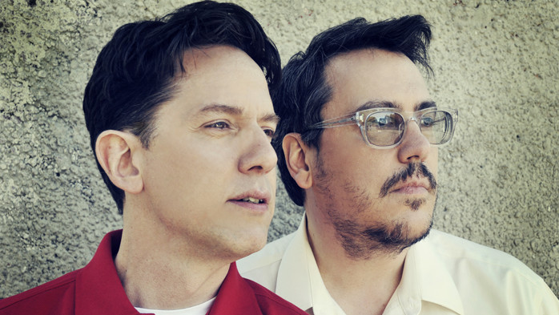

TMBG Music Recs
Welcome to my webpage! This page is all about my favorite band of all time, They Might Be Giants.
This band, founded in 1982 by two friends from college, John Linnell and John Flansburgh (yes they are
both named John), has been making music for the span of over 4 decades.

Slider goes here
Second two paragraphs go here
Copyright ©2023.